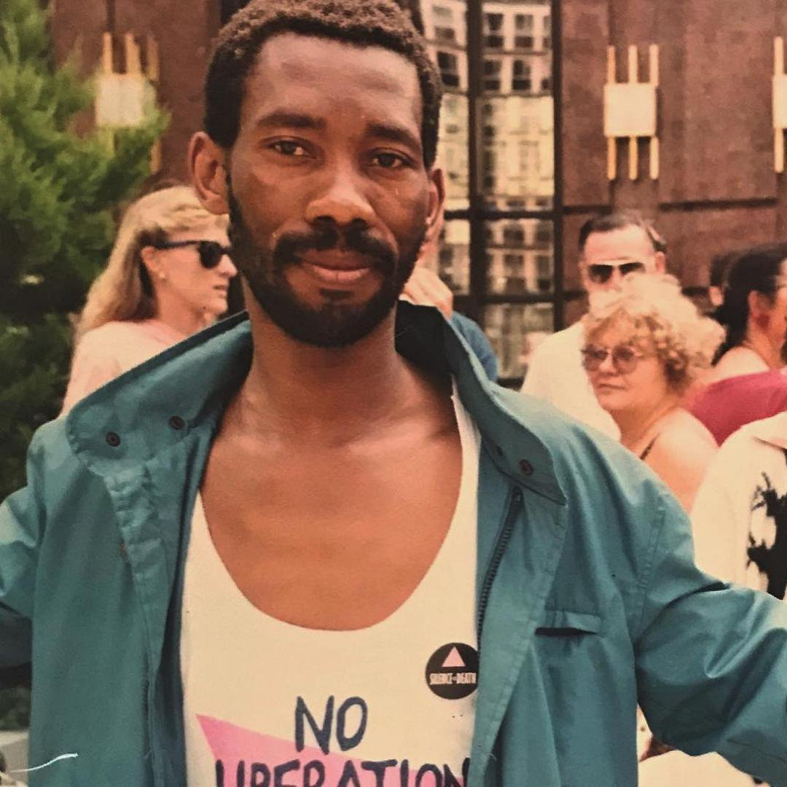
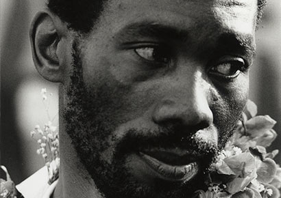

Simon Nkoli
A coragem pessoal e o orgulho feroz de Simon Nkoli em sua identidade como um sul-africano negro e um homem gay fizeram dele um líder no movimento anti-apartheid e no movimento de libertação gay sul africano. Além disso, sua recusa em manter escondida sua identidade gay e seu trabalho incansável dentro do movimento anti-apartheid ajudaram a mudar as atitudes anti-gay de longa data entre aqueles que trabalhavam pela justiça social na África do Sul. Nkoli não apenas ajudou a fundar os primeiros grupos de direitos dos gays liderados por negros em sua terra natal, mas também abriu o caminho para a África do Sul se tornar o primeiro país do mundo a incluir a proteção dos direitos de gays e lésbicas em sua constituição nacional.
Tseko Simon Nkoli nasceu em 26 de novembro de 1957, no município de Phiri, em Soweto, na África do Sul. Soweto, uma contração das palavras "South Western Townships", é o nome dado a um grupo de pequenas comunidades negras fora da cidade sul africana de Joanesburgo. Seus pais e seus quatro filhos viviam na pobreza e no medo sob a extrema segregação do sistema de apartheid sul-africano. Uma das primeiras lembranças de Nkoli foi esconder seus pais da polícia porque a política restritiva de leis de aprovação do governo branco tornava ilegal a família morar junto.
Seus pais se separaram quando Simon era criança, e ele foi enviado para morar com os avós, que trabalhavam como fazendeiros no Estado de Free Orange, uma província ao sul de Joanesburgo. As crianças trabalhavam longas horas na fazenda e enfrentavam açoites do senhorio branco se o trabalho não terminasse a tempo. Mesmo quando criança, Nkoli entendeu rapidamente que a educação era sua melhor esperança de uma vida melhor. Até os 13 anos, ele andou 14 quilômetros, ou quase nove milhas, para frequentar a escola, além de seu trabalho agrícola.
Quando ele completou 13 anos, o proprietário branco e seus avós concordaram que Nkoli deveria deixar a escola para trabalhar em tempo integral na fazenda. Não querendo desistir de seu sonho de melhorar sua vida, ele fugiu para Joanesburgo, onde encontrou sua mãe, Elizabeth, e seu padrasto, Elias, e continuou sua educação. Seu padrasto trabalhava em um hotel como chef e sua mãe trabalhava como empregada doméstica e mais tarde como balconista de uma loja.
Nkoli começou a perceber que ele era gay quando era adolescente. Quando ele tinha 19 anos, ele se envolveu em seu primeiro relacionamento romântico com um homem, um motorista de ônibus branco que ele conhecera através de uma revista de correspondência. Em seu aniversário de 20 anos, ele contou à família sobre sua orientação sexual. Sua família permaneceu firme no amor a Nkoli, mas sabia pouco sobre a homossexualidade e ficou com raiva e medo da revelação dele. Os pais de Nkoli também ficaram chateados com o relacionamento. Eles aceitaram a homossexualidade do filho, mas recusaram-se a permitir seu relacionamento com um homem negro. Os dois jovens ficaram tão arrasados com as reações de suas famílias que planejaram cometer suicídio juntos. Quando a mãe de Nkoli descobriu o plano, ela desistiu de se opor ao relacionamento e convenceu os dois a não se matarem. Na esperança de mudar sua sexualidade, a mãe e o padrasto de Nkoli o levaram a padres, curandeiros tradicionais e um psiquiatra. Por coincidência, o psiquiatra era um homem gay que ofereceu apoio a Nkoli em sua escolha. Ele até sugeriu uma maneira de Nkoli e seu parceiro viverem juntos, com Nkoli posando como servo. Quando os dois entraram na faculdade em Joanesburgo, eles viveram juntos dessa maneira.